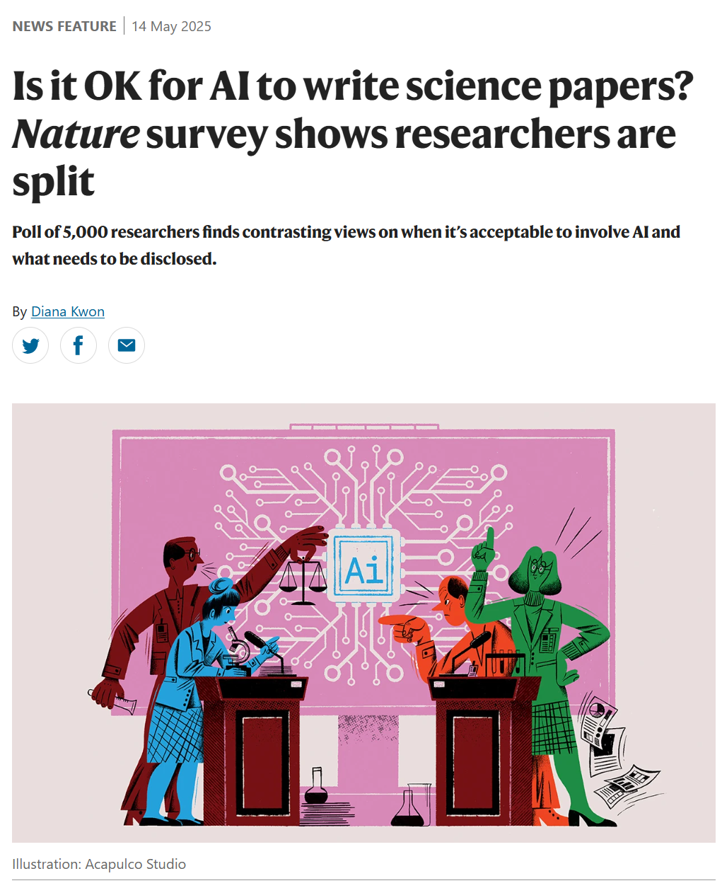
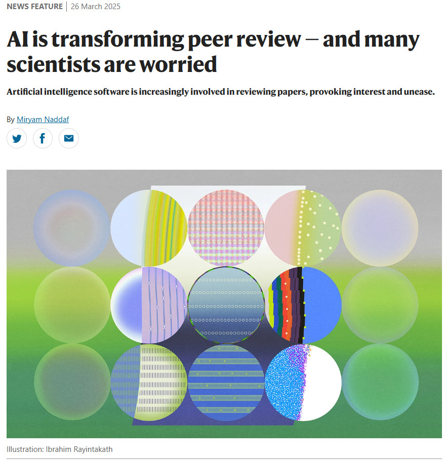
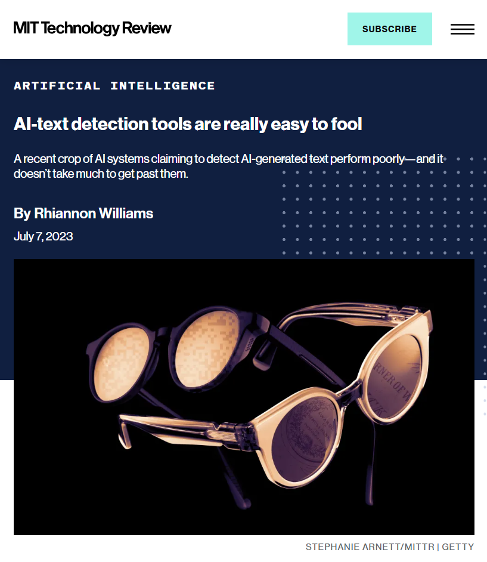
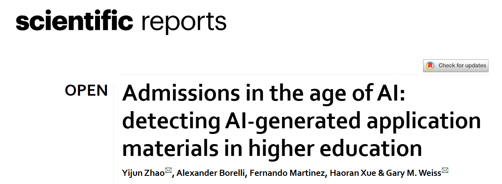
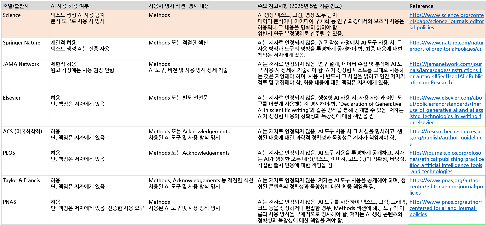
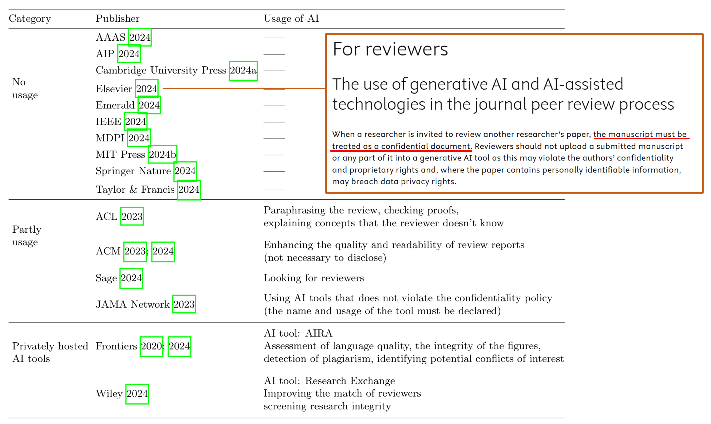
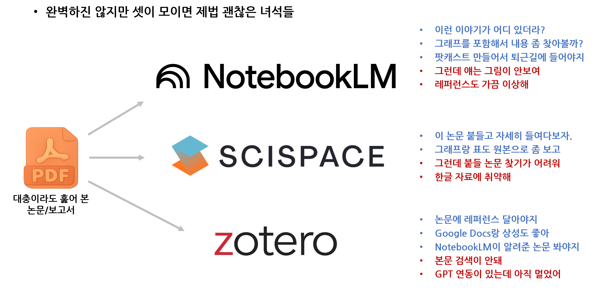
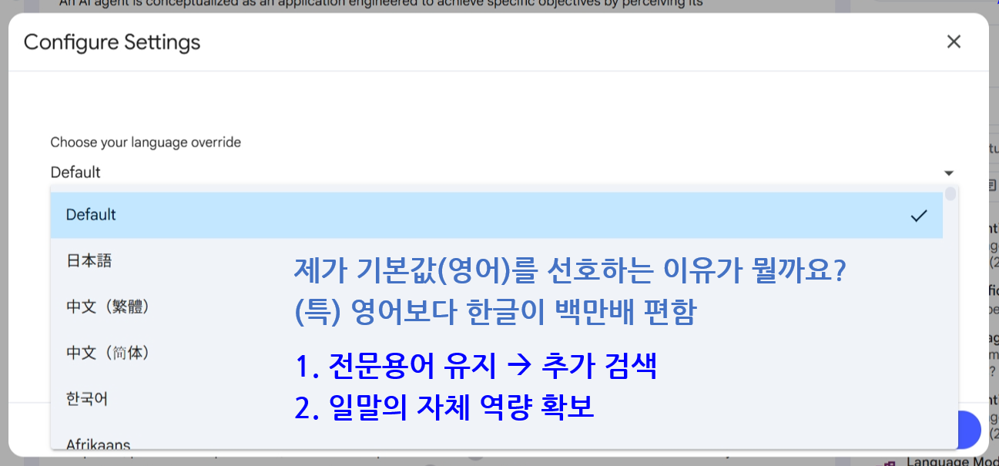
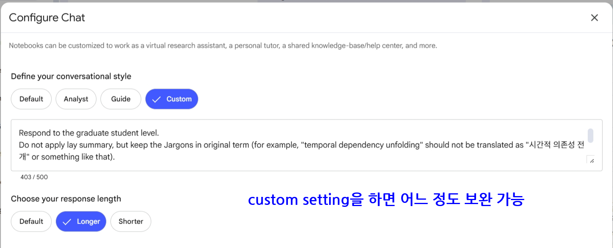
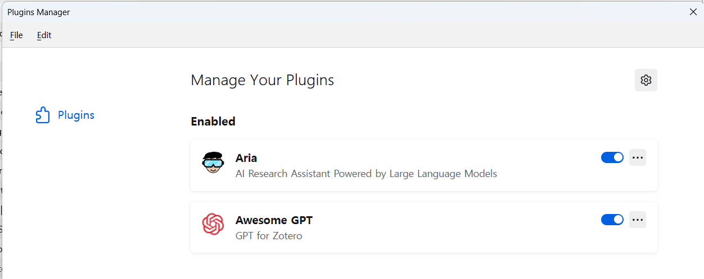

- 최근 서울과학기술대학교, 서울대학교, 전기학회의 초청을 받았습니다.
- “인공지능을 활용한 슬기로운 연구생활”이라는, 전과 동일한 제목의 강연을 드렸습니다.
- 그러나 내용은 최근의 업데이트와 질문들을 반영하여 적잖이 바뀌었습니다.
1. 기술적으로, 연구에 AI를 써도 되나?
Nature: Is it OK for AI to write science papers? Nature survey shows researchers are split
Nature: AI is transforming peer review - and many scientists are worried
npj Digital Medicine: Cross sectional pilot study on clinical review generation using large language models
MIT Technology Review: AI-text detection tools are really easy to fool
scientific reports: Admissions in the age of AI: detecting AI-generated application materials in higher education
1.1. 기술적으로, AI에게 글을 작성시켜도 되나?

- 저를 비롯해 많은 분들이 끊임없이 고민하고 의심하는 질문입니다.
- 최근 Nature 기사에 따르면 연구자들조차 관련 의견이 갈려있습니다.
- AI를 사용하면 편집과 번역이 쉬워지고 좋아지며, 특히 비영어권 연구자들의 원고 초안 작성에 유리합니다.
- 학술언어가 영어인 탓에 기울어진 운동장이라는 평을 받아왔는데, 이제 공정한 게임을 하게 되었다는 뜻입니다.
- 그러나 반대 의견도 적지 않습니다.
- 의도치 않은 표절 이슈는 생성 AI가 등장한 초창기부터 따라다니는 낙인입니다.
- 게다가 AI가 수준 이하의 결과, 즉 잘못된 인용 등 부정확한 정보를 만들 수 있는 환각 또한 문제입니다.
- 이로 인해 실제 사용량이 낮게 집계되는데, 사용하는 연구자들이 공개하지 않기 때문일 수 있습니다.
- 여기에 다른 이의 연구를 평가하는 **동료 평가(peer review)**에 AI가 동원되면서 문제는 더 심각해집니다.
1.2. 기술적으로, AI에게 동료 평가를 맡겨도 되나?

- 언어모델은 텍스트를 요약도 잘 하고, 오류도 잘 짚어서 고쳐줍니다.
- 그런데 논문을 평가해야 할 리뷰어들이 요약본만 가지고 평가하는 경우가 있고,
- 심지어 오류 지적과 대안 제시도 AI에게 맡겨버리는 경우가 늘고 있습니다.
- AI의 논리추론 능력이 좋아지고 있지만 깊고 중요한 측면을 파악하지 못하는 경우가 많고, 실질적인 비평 없이 답변만 길게하는 경향이 있습니다.
- 법률적으로도 비밀보장 의무 위반, 지적 재산권 침해 등 문제가 발생할 소지가 있습니다.
- 다른 연구에서도 AI가 작성한 리뷰는 다음과 같은 특징을 가짐이 확인되고 있습니다.
- “참고 문헌이 적고 포괄적인 인사이트가 부족하며 논리적 일관성이 떨어지고 인용의 진위 여부와 정확성이 떨어지는 경우가 많습니다. 또한 참조 문헌 중 더 많은 비율이 낮은 수준의 저널에서 나온 것입니다.”
1.3. 기술적으로, AI가 작성한 글을 잡아낼 수 있나?


- 그러다 보니 AI가 작성한 글을 찾아내는 기술이 등장하지만, 예나 지금이나 성능은 신뢰를 받지 못하고 있습니다.
- AI 생성 이미지는 눈에 보이지 않는 워터마크를 삽입하여 판독할 수 있지만, 단어와 글자의 나열에는 적용하기 어렵습니다.
- 최근 연구에서는 99% 높은 정확도를 달성하기도 했지만 학습한 텍스트에 한한다는 큰 단점이 있습니다.
- 예를 들어 교육 관련 텍스트로 학습한 모델을 학교 입학 자료처럼 유사한 분야에 적용하면 믿을 만 하지만 위키백과에 적용하면 무작위에 가까운 수준으로 신뢰도가 떨어집니다.
- 심지어 OpenAI에서 출시한 도구조차 사람이 작성한 글을 AI 작성으로 오인한다고 합니다.
- 언젠가 쓸만해질지도 모르지만 아직은 아닙니다.
2. 규정상, 연구에 AI를 써도 되나?
- 기술적으로 가능하다고 규정상 다 그래도 되는 것은 아니고,
- 기술적으로 불가능하다고 규정으로 다 막혀있는 것도 아닙니다.
- 기술과 규정은 별개이기에 재차 확인할 필요가 있습니다.
2.1. 규정상, AI에게 글을 작성시켜도 되나?

- 결론적으로 웬만하면 됩니다.
- 그러나 저널에 따라 Methods, Acknowledgements 등에 어떤 도구를 어떻게 썼는지 작성해야 합니다.
- Elsevier의 경우 **”문장의 가독성과 명확성을 향상시키기 위해 ChatGPT를 사용했다”**는 식으로 작성하면 되지만,
- 출판하고자 하는 저널마다 다르므로 관련 규정을 반드시 찾아보시기 바랍니다.
2.2. 규정상, AI에게 동료 평가를 맡겨도 되나?

- 문서 작성과 반대로, 웬만하면 안됩니다.
- AAAS, AIP, Elsevier, IEEE, 심지어 MDPI까지 금지하고 있습니다.
- ACL, ACM, Sage, JAMA가 윤문이나 리뷰어 탐색 등에 부분적으로 허용하고 있고
- Frontiers와 Wiley만 Privately hosted AI tools를 사용해도 된다고 합니다.
- 리뷰는 귀찮아도 직접 하는 걸 권합니다.
2.3. 규정상, AI가 작성한 글을 잡아내야 하나?
- 앞서 말씀드렸듯 현재 기술로 제대로 판별하는 것이 불가능합니다.
- 그럼에도 불구하고 기사에 따르면 **”지난해 3월 고용노동부와 한국고용정보원이 발표한 ‘2023년 하반기 기업 채용동향조사’에 따르면 기업은 챗GPT로 자기소개서를 작성한 것이 확인되면 ‘감점’(42.2%)이나 불합격(23.2%) 등 불이익을 주겠다고 답했다.”**라고 합니다.
- 각종 기업과 기관 일선 분들의 자각과 제도 개선이 필요하다고 생각됩니다.
3. 쓸만한 AI 도구들은 뭐가 있나?

- 누가 제게 좋은 도구를 물어보면 항상 perplexity와 NotebookLM과 scispace를 소개해 드렸습니다.
- perplexity가 SKT 프로모션 등으로 많이 알려지기도 해서 여기서는 제외했고,
- 대신 서지관리 프로그램인 zotero를 함께 소개해 드렸습니다.
- 아직 개발 여정에 있는 도구들이라 모두 완벽함과는 거리가 멀지만, 함께 사용하면 강력합니다.
3.1. 전제조건
- 어떤 도구를 사용하건, 전제조건이 있습니다.
- 반드시 PDF 등 원문을 내려받아 대강이라도 훑어보고 각각의 도구에 업로드해서 사용해야 한다는 겁니다.
- NotebookLM는 링크만으로 내용을 읽을 수 있고, scispace는 perplexity처럼 검색을 시켜 답을 받을 수 있지만 그러면 안 됩니다.
- 환각이 적지 않게 발생하고, 양질의 DB에 접근이 불가하기 때문에 반드시 학교나 연구소의 라이선스를 이용해 원문을 받으셔야 합니다.
- 장점은 인터넷에 널렸으므로 검색하시기 바랍니다.
- 여기서는 주의점과 팁 위주로 말씀드리겠습니다.
3.2. NotebookLM

Configure Settings에서 출력 언어를 설정할 수 있습니다.- 여기를 한국어로 설정하면 팟캐스트도 한국어로 출력됩니다.
- 그러나 저는 **Default(영어)**로 세팅합니다.
- 한글로 세팅하면 답변을 하면서 전문용어도 한글로 바꿔버려 재검색을 어렵게 만들기 때문입니다.
- 게다가 묘하게 한글로 세팅할 경우 mind map을 부분만 그리기도 합니다.

- 그래도 한글로 받아봐야겠다면, 프롬프트를 세팅해서 답변을 보완할 수 있습니다.
Configure Chat에서 세팅이 가능하며, 저는 다음과 같이 입력해 두었습니다.
Respond to the graduate student level.
Do not apply lay summary, but keep the Jargons in original term (for example, “temporal dependency unfolding” should not be translated as “시간적 의존성 전개” or something like that).
Answer as if you are an analyst. Provide me detailed information, regarding causes and results.
You are strongly recommended to present result (particularly, comparison result) as a table.
3.3. scispace
- 두 가지가 아쉽습니다.
- 하나는 한글 문서에 잘 대응하지 못한다는 점 - GPT가 아니라 다른 경량모델을 쓴다는 추측의 근거이기도 합니다.
- 또 하나는 폴더 관리가 어지럽다는 점입니다 - 저같이 my library 위주로 쓰는 사람이 있을 거라고 생각을 못한 듯 합니다. 이게 가장 큰 장점인데요.
- NotebookLM은 한 폴더에 수십, 수백개의 자료를 집어넣고 질의합니다.
- **”내가 이런 말을 본 것 같은데 어디있더라”**할 때, 해당 문서를 찾아내기 편합니다.
- scispace는 문서 하나를 골라서 집중적으로 공략하기 좋습니다.
- **”여기서 이게 무슨 뜻이지?”, “이 내용이 정확히 뭐지?”**를 찾기 좋습니다.
- scispace와 NotebookLM은 서로의 단점을 각자의 장점으로 너무 잘 메워줍니다.
- scispace library 관리만 좀 더 체계적이면 좋겠습니다.
3.4. zotero
- zotero는 오픈소스입니다.
- 그만큼 뜻과 능력이 있는 개발자가 붙으면 기능이 강화된다는 뜻입니다.
- GPT를 붙일 수 있는 플러그인이 나와있어 논문의 내용도 보기 좋아졌습니다.

- 이 중 ARIA를 먼저 소개하면, 인터페이스가 다소 조잡하긴 하지만 기능이 의외로 좋습니다.
- 문서를 불러다 질의응답을 할 수 있는데, 두 개를 동시에 넣고 비교도 시킬 수 있습니다.

- GPT-4o의 멀티모달리티를 이용해 표나 화학식 등 이미지를 갖다붙이고 질의도 할 수 있습니다.

4. 결론
- 세상은 빠르게 변하고 좋은 도구들은 계속 나옵니다.
- 우리가 해내야 할 일들도 조금씩 바뀌겠지만, 근본적으로 변하지 않는 것들이 있습니다.
- 인공지능 도구들의 도움을 받아서 본질에 에너지를 모을 수 있기를 기대합니다.
- 강의자료 전문을 여기 공유드립니다: 다운로드